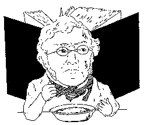
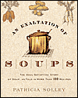

|

PRIMORDIAL SOUP
Soup myths
Soup fables
Soup moral tales
Soup fantasies
|
SOUP TALES
or,
Ecce Soup,
what man hath wrought
WROUGHT SOUP
Poetic soup
- "Soup" by 20th century U.S. poet Carl Sandburg
- "The Meaning of Soup Is Lost" by 20th century Spanish poet Gabriel Celaya
- 20th century poet Charles Simic's "Soup" of life
- 15th century Bektashi mystic poet Kaygusuz Abdal's "Petition"
- Jem Poster misses the comfort of soup in "Brought to Light"
- Günter Grass watches the soup blown out of his hands as a young German tank soldier
- Gary Snyder's "How to Make Stew in the Pinacate Desert: Recipe for Locke & Drum" [close enough--great Beat poem!]
- Poetry of the Beats: Ginsberg, Kerouac, Corso, Creeley, Ferlinghetti, & Meltzer
- "Pan Tadeusz" and its ecstatic rendering of Polish bigos, by Adam Mickiewicz
- "I am a Lutheran" by Garrison Keillor, featuring cream of mushroom soup
- "The Fury of Rain Storms" by Anne Sexton
- Cajun Night Before Christmas by "Trosclair," featuring gumbo
- "Recipe for Bouillabaisse" by Joseph Mery
- "The Gourmet's Love-Song" by P.G. Wodehouse
- "Salvador Dali" by hipster Richard Brautigan
- "Ode to Conger Chowder" by Chilean poet Pablo Neruda
- "Amazing Soup" by Canadian poet and novelist Jerry Newman
- An over-the-top Hungarian poem A húsleves dicsérete, "In praise of bouillon", by poet Berda József
- Alexander Pope's "Receipt to make Soup"
- Louis Simpson's "A Story about Chicken Soup"
- Anon.
- Matsuo Basho's Haiku
- Tatiana Bik's "Oh Life"
- Geoffrey Chaucer's "The Canterbury Tales"
- Robert Crawford's "Scotch Broth"
- Heinrich Hoffman's "Story of Augustus"
- Miguel de Cervantes' "Don Quixote"
- Carolyn Kiser's "Mud Soup"
- Carl Sandburg's "Cornhuskers"
- Siegfried Sassoon's "The Old Huntsman"
- John Taylor's "The Great Eater of Kent"
- William Makepeace Thackeray's "Bouillabaisse"
- Thomas Tusser's "500th points..."
Theatrical soup
Novel soup
Storied soup
|

SOUPSONG HAS GONE HARDCOPY!
Buy one (or more) at amazon.com or barnesandnoble.com.
Release date: 12/28/2004.
JUST-THE-FACTS SOUP
|